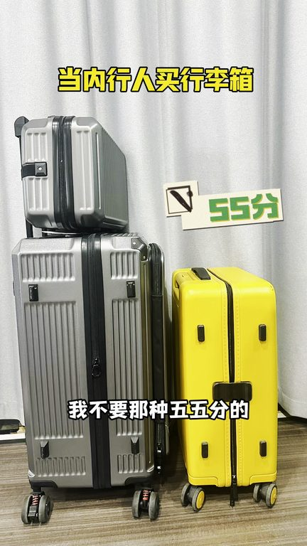
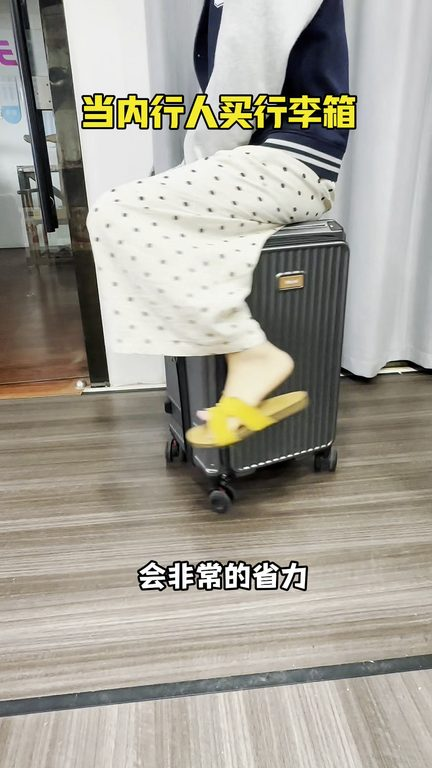
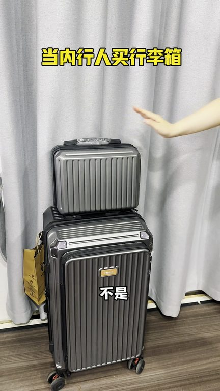

TOP 1 · 代表素材深度拆解
核心放量 稳健
视频为原始素材 HTTPS 链接；点击后加载，建议在网络环境良好时播放。
18.7万素材消耗
3.40%CTR
34.1%类目消耗占比
+0.63pp较类目均值
表现判断
该素材是类目内第 1 名，属于“核心放量”；CTR 高于类目均值。消耗体现承接规模，CTR 体现首屏与定向效率，两项应结合判断，不能仅以单指标下结论。
表达标签
口播三段式证据
开场钩子你好老闆給我拿個司令箱吧你好請問要個什麼樣的我不要那種5分的那種容量比較小一打開的話又沾地方而且的話你像大件的東西它根本就放不了我想要那個19分的我看到人家那個連大水桶都放了下容量特別的大
中段论证像這種的沉重力它就會好而且推起來的話會非常的省力記得要拿純PC的面板那種塑料的我不要這種的話它不容易變形而且防火對了我還要多功能你像我喜歡喝水要有水別指甲要有掛鉤包括那些充電的功能你全部都要要的不要什麼都沒有的那種出門太費勁了你帶這種多功能的話你出門就直接解放雙手了大小我想好了你就拿一個26的這個尺寸是黃金尺寸你冬天衣服後它也能裝出門我用多久它基本上都夠對了…
结尾转化你還不給我便宜一點那450吧我這都不掙錢啊老闆我可是內行人我知道你們死裡長內不長我今天是看你的箱子好我才誠心想買的你再給我便宜一點這樣吧200多給我可以包到時候用得好我叫我小姐妹們全部都來買那行吧那到時候你可得多給我介紹點啊
有效点
- CTR 3.40% 高于类目均值 2.76%，开场或人群指向具备点击优势
- 素材已进入类目消耗 Top，核心表达具备继续拆分测试的价值
迭代动作
- 保留当前高效钩子，复制 3 个变量版本：人物、首句和首帧分别单变量测试
- 视频时长偏长，建议剪出 30–45 秒短版，仅保留钩子、两项证据和一次 CTA
- 促销口径与资质信息保持同屏可验证，结尾只保留一个明确行动指令
合规关注

钩子建立 · 4.7s

场景/问题展开 · 35.6s

卖点证据 · 81.9s
转化收口 · 112.7s
查看完整口播摘要
你好老闆給我拿個司令箱吧你好請問要個什麼樣的我不要那種5分的那種容量比較小一打開的話又沾地方而且的話你像大件的東西它根本就放不了我想要那個19分的我看到人家那個連大水桶都放了下容量特別的大那種塑料的我也不要尤其是那種四個輪的你推起來又吵而且的話它這重心不穩就站不穩推起來特別的飛進我不要那種了你給我拿那個五個輪的要加快的香蕉輪還要帶鋼製軸承像這種的沉重力它就會好而且推起來的話會非常的省力記得要拿純PC的面板那種塑料的我不要這種的話它不容易變形而且防火對了我還要多功能你像我喜歡喝水要有水別指甲要有掛鉤包括那些充電的功能你全部都要要的不要什麼都沒有的那種出門太費勁了你帶這種多功能的話你出門就直接解放雙手了大小我想好了你就拿一個26的這個尺寸是黃金尺寸你冬天衣服後它也能裝出門我用多久它基本上都夠對了你別忘了你還要給我拿一個防塵香套這個防塵香套都是送的你可別不給我送不是你是通行吧你不要管那麼多而且現在還有好多素小箱子的你這個也要給我送一個不是哪有你這樣要的反正你就按我說的這樣辦我肯定是不帶彩坑的你說吧這一套多少錢這麼早吧你給500吧什麼我要10套啊你還不給我便宜一點那450吧我這都不掙錢啊老闆我可是內行人我知道你們死裡長內不長我今天是看你的箱子好我才誠心想買的你再給我便宜一點這樣吧200多給我可以包到時候用得好我叫我小姐妹們全部都來買那行吧那到時候你可得多給我介紹點啊